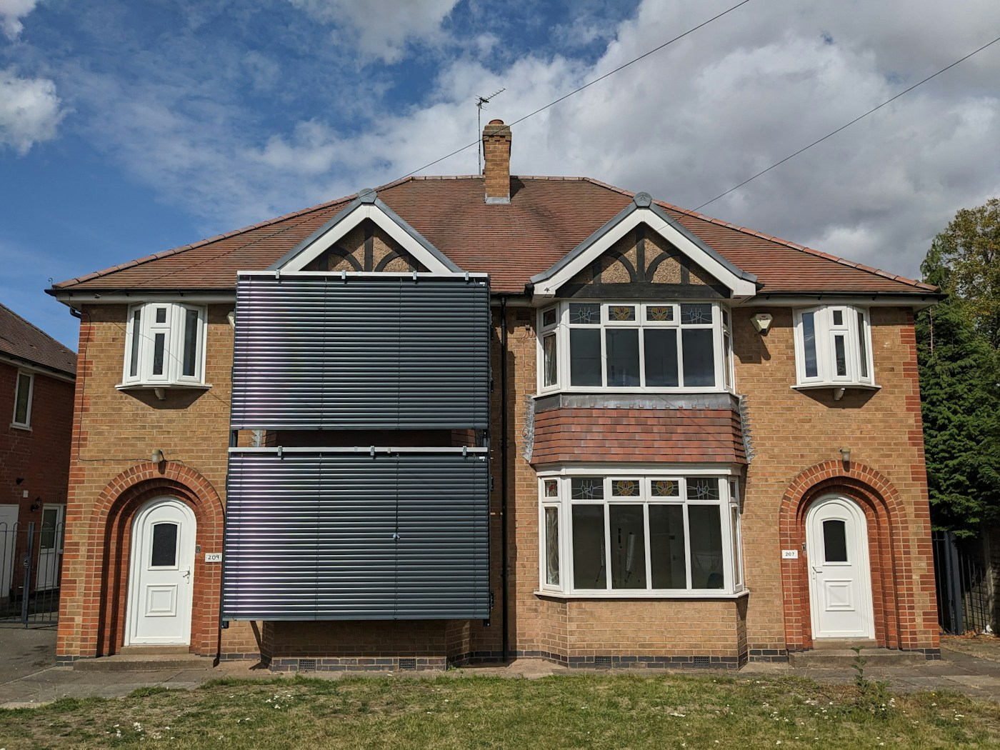
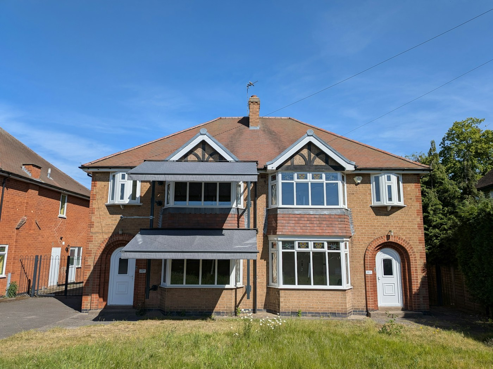
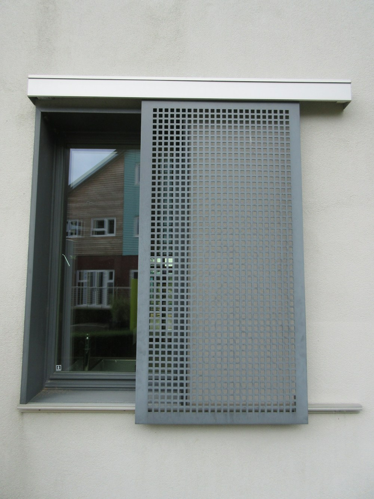

As the UK prepares for the third heatwave of 2026, most people will be hoping to try and keep cool at home.
Building regulations to protect homes from overheating were introduced in 2022. These require all new homes to be checked at the design stage to see if they might be at risk of overheating. If the overheating risk is high, the architect has to make changes to the design.
Given that the UK government plans to build 1.5 million homes by 2029 and the climate is predicted to continue to warm, reducing overheating in new homes is essential. Around 4.6 million bedrooms (19% of the stock) and 3.6 million living rooms (15%) in homes in England were found to have overheated during the summer of 2018.
At Loughborough University we have been experimenting with a pair of semi-detached houses, each fitted with different shading devices, to see what might work to reduce overheating. A lot more needs to be done to make sure UK homes are able to cope with the high temperatures they are likely to experience more often in the future.
1. External shading
If you live in the UK, count the number of window shades you can see on a street. While these were previously quite common in the Victorian period, for instance, most new homes don’t have external shading. But they are one of the most effective passive cooling measures (methods to lower indoor temperatures without air conditioning), as well as being relatively cheap to install.
Ongoing experiments in our pair of test houses have shown that external shading can reduce indoor temperatures by over 6°C, which can make a meaningful improvement to people’s health and wellbeing at home. Other research is looking at how acceptable and affordable shading devices, like awnings, are to householders.
If included at design-stage, some form of external window shading could be applied to almost any new home – even high-rise flats, which are at highest risk of overheating. Tall blocks of flats in countries like France and Italy often incorporate shading on balconies.

2. Insulated and airtight
Some people believe that higher levels of insulation are increasing overheating risk – but this is not correct. Research shows that energy efficiency measures do not increase overheating. They do make rooms warmer, but not so much that they cause overheating discomfort or health risks to people. Increased temperatures from internal wall insulation can be counteracted with ventilation through windows.
Insulation works to ensure that heat does not flow in either direction – in or out of a building. A large national survey of homes in England found that loft insulation reduces overheating, probably because it protects the room below from the high temperatures that can be experienced in loft spaces. Higher levels of airtightness reduces infiltration of hot air from outside during heatwaves.
Building regulations in the past have only focused on reducing wintertime heating demand and for good reason – in the last 25 years, 77 times more people died due to cold homes than hot homes. But combined with new regulations for overheating which limits the sun’s heat entering through windows, high levels of insulation and airtightness can be a positive thing for our buildings all year round.
3. Secure ventilation and sensors
Research in our test houses also investigated the effect of behaviour on overheating. To do this we used synthetic occupants – these are automated devices which can open windows, doors, curtains, and blinds. These controlled tests showed that the way people use windows and shading affects how much their home overheats. I spent a lot of time during recent heatwaves advising people when to open or close their windows. But this ignores the fact that poor building design is often the cause of overheating in many cases – no matter when you open your windows.
If homes could incorporate a cheap and simple temperature sensor which connects to the internet and tells you when to open or close a window it could significantly reduce indoor temperatures. Placed in multiple rooms, they could encourage householders to use cross-ventilation (opening windows on opposite sides of the building) or stack-ventilation (opening ground and first-floor windows), if available.
The issue remains that people are unwilling or unable to open their windows at night or in polluted, noisy areas near main roads. Instead we need a secure means of ventilation which encourages people to keep windows open at night without worrying about security or being woken up by noise.

4. Ceiling fans
Fans don’t cool the air, but they reduce the skin’s surface temperature by increasing sweat evaporation and carrying away heat. They also use considerably less electricity compared to air-conditioning.
Ceiling fans are effective at reducing people’s core body temperature and could be installed in all new-build homes. Building regulations on overheating require any window coverings used to pass the assessment to be installed during construction. Ceiling fans should be installed at the same time.
If new-build homes are to incorporate ceiling fans, ceiling heights may need to increase, which adds to building costs. Ceiling heights in UK homes have dropped over time. In Victorian homes, ceilings were often three metres from the floor, but in newly built UK homes they are commonly 2.4 metres, with 2.3 metres being the standard minimum.
5. A cool refuge
Having a cool room to retreat to in your home can help. In two-storey houses this might be a ground floor or north-facing room. New-build homes could incorporate such a space – highly shaded, on the north-side of the home, and perhaps built with high thermal mass (such as stone walls which keep cool longer during the day).
Mechanically cooling whole houses in the UK should be avoided due to high electricity prices. It also creates pressure on the electricity grid, and creates greenhouse gases. But the Committee on Climate Change, a UK body that advises the government, recently suggested creating one cool room with active cooling (air-conditioning) for use during long heatwaves could be an option.
As more heatwaves hit the UK, residents will increasingly want more information about how to stay cool. Retrofits can be expensive. We need to create housing that works in these increasingly high temperatures to best protect people and avoid expensive energy bills.
By Ben Roberts, Senior Lecturer in Healthy Buildings, Loughborough University
This article is republished from The Conversation under a Creative Commons license. Read the original article. Images reproduced with the permission of the author.